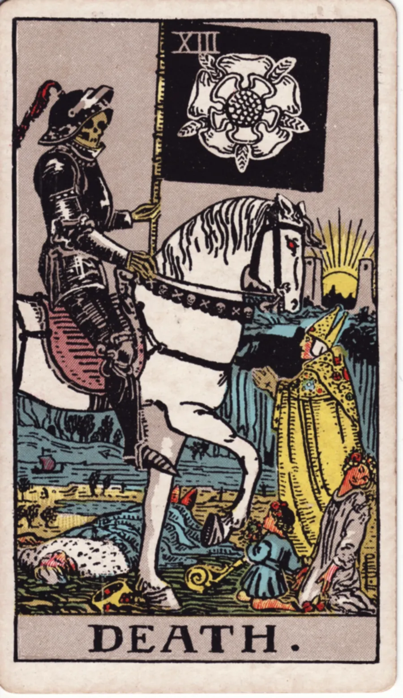

Significado da carta
A Morte no tarô
Arcano Maior 13Elemento Água
- Fim
- Transmutação
- Renascimento
- Transição
Em uma frase
Deixe ir o que não serve mais para abrir espaço para o novo que deseja nascer. Toda conclusão é, na verdade, o solo fértil para um recomeço promissor.
Significado da Morte
Deixe ir o que não serve mais para abrir espaço para o novo que deseja nascer. Toda conclusão é, na verdade, o solo fértil para um recomeço promissor.
A Morte invertida
O medo de finalizar ciclos pode estar prendendo você ao passado. Aceite a impermanência para que a transformação necessária possa finalmente acontecer.
A Morte no amor
No amor, A Morte quase nunca fala de algo literal. Ela fala do fim de uma fase: uma relação que se encerra, ou uma forma de se relacionar que precisa morrer para que outra nasça. Doloroso, mas libertador.
Sua pergunta é sobre alguém? A tiragem Amor (3 cartas) responde à sua pergunta por 3 créditos, e os 3 de boas-vindas pagam a primeira.
Baixar grátis noGoogle PlayA Morte no trabalho e no dinheiro
No trabalho, anuncia transformação profunda: mudança de emprego, fim de um projeto, reestruturação. Agarrar-se ao que acabou só prolonga a transição. No dinheiro, cortar o que drena.
Uma decisão de trabalho ou dinheiro? A tiragem Carreira e Dinheiro (3 cartas) responde à sua pergunta por 3 créditos, e os 3 de boas-vindas pagam a primeira.
Baixar grátis noGoogle PlayA Morte como conselho
Como conselho, A Morte diz: deixe ir. O espaço que fica é onde o novo cabe.
Precisa de um sim ou um não? A tiragem Sim ou Não (1 carta) responde à sua pergunta por 1 crédito, e os 3 de boas-vindas pagam a primeira.
Baixar grátis noGoogle PlayTirou a Morte?
No app, a leitura fala da sua pergunta, e de cada carta que saiu para ela.
Baixar grátis noGoogle Play- Grátis para baixar
- Carta do Dia grátis, todo dia
- 3 créditos de boas-vindas
- Sem anúncios